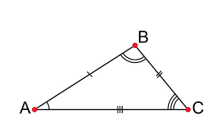
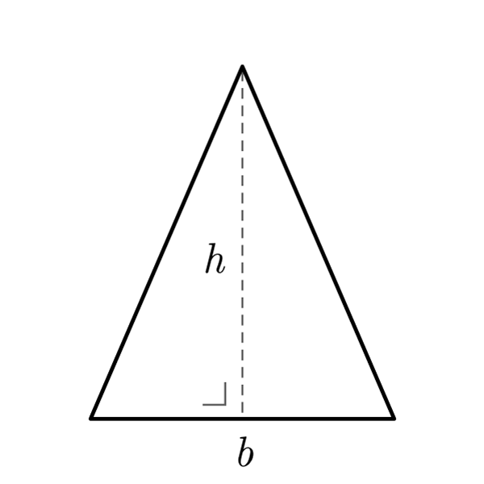
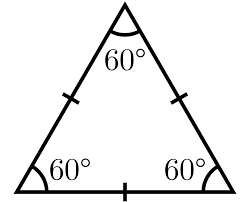
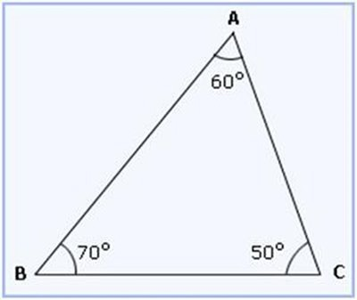
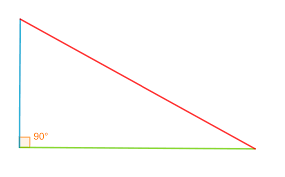
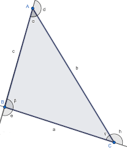

Concepto de Angulo:
Un ángulo es la abertura que se forma cuando dos rectas o semirrectas se encuentran en un mismo punto.
Unidades de Medida:
• Grados(°):
Un círculo completo se divide en 360 partes iguales, llamadas grados.
Cada grado se puede dividir en:
60 minutos (′)
Cada minuto en 60 segundos (″)
• Radianes:
Se basa en la relación entre el radio de un círculo y la longitud de un arco.
Un círculo compelto equivale a:
• Sistema sexagesimal:
Es el sistema basado en el número 60. Se utiliza para medir ángulos y también el tiempo.
Un círculo compelto equivale a:
Significa:
45 grados
30 minutos
20 segundos
Conversión:
• 1.Conversion en el sistema sexagesimal
Equivalencias básicas:
• De grados a minutos o segundos:
Grados a minutos:
Grados a segundos:
• De minutos o segundos a grados:
Minutos a grados:
Segundos a grados:
• 2.Conversión de grados a radianes
Se usa la equivalencia:
Fórmula:
Ejemplo:
• 3.Conversión de radianes a grados
Fórmula:
Ejemplo:
Tipos de Ángulos:
• Nulo: 0°
• Agudo: < 90°
• Recto: 90°
• Obtuso: entre 90° y 180°
• Llano: 180°
• Completo: 360°
Ángulos en Paralelas y Transversal:
• Opuesto por el vértice: iguales
• Complementarios: suma 90°
• Suplementarios: suma 180°
• Correspondientes: iguales
• Alternos internos: iguales
• Alternos externos: iguales
• Colaterales: suma 180°
Concepto de Triangulo:
Figura de tres lados cuya suma de ángulos internos es 180°.
Según sus lados:
• Escaleno: todos diferentes
• Agudo: < 90°
• Recto: 90°
• Obtuso: entre 90° y 180°
• Llano: 180°
• Completo: 360°
• Complementarios: suma 90°
• Suplementarios: suma 180°
• Correspondientes: iguales
• Alternos internos: iguales
• Alternos externos: iguales
• Colaterales: suma 180°

• Isósceles: dos lados iguales

• Equilátero: tres lados iguales

Según sus Angulos:
• Acutangulo: todos < 90°

• Rectangulo: uno de 90°

• Obtusangulo: uno > 90°
